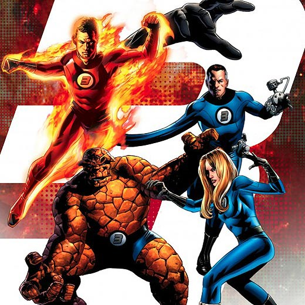
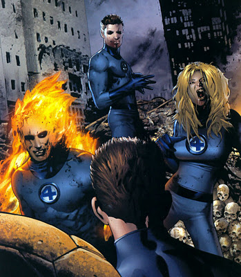

He was born in the apartment of his Romanian-born Jewish immigrant parents in New York City
His father, a dress cutter, worked only sporadically after the Great Depression
Graduated high school early at the age of 16 and enrolled into the WPA Federal Theatre Project
He became an assistant in 1939 at Timely Comics, a division of Pulp Magazine
Ironically enough, this would turn into Marvel Comics in the 1950's
In 1941, he wrote the comic filler for Captain America. Lee portrayed Captain America throwing his shield, which would remain a staple to present day
DC's re-establishment of the superhero archetype and updating the Flash, Goodman, Lee's boss wanted to create the same model.
Lee decided to go a different route. He wanted to portray the superhero's as more human - facing problems , drinking, cussing and so forth.
His first batch of new group of superhero's came in the form of the Fantastic Four
 